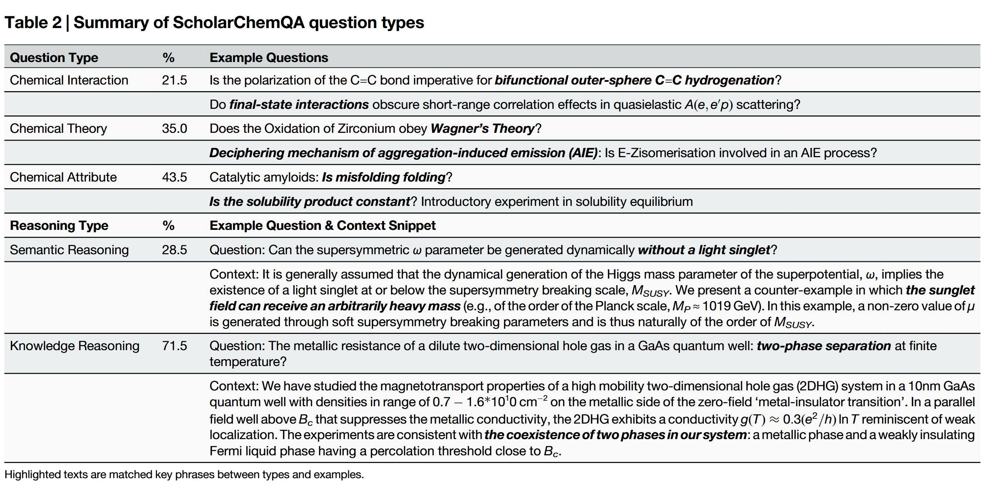
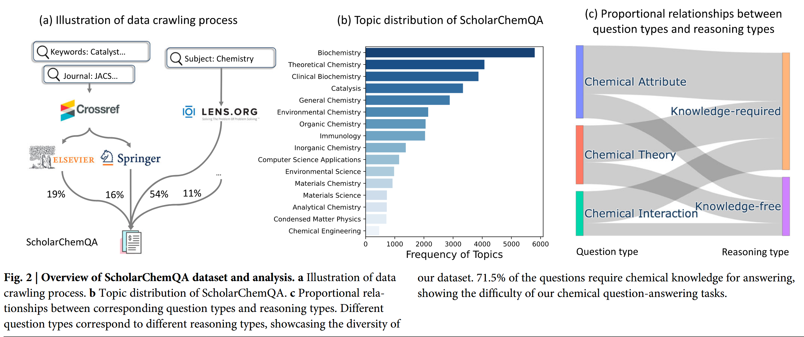
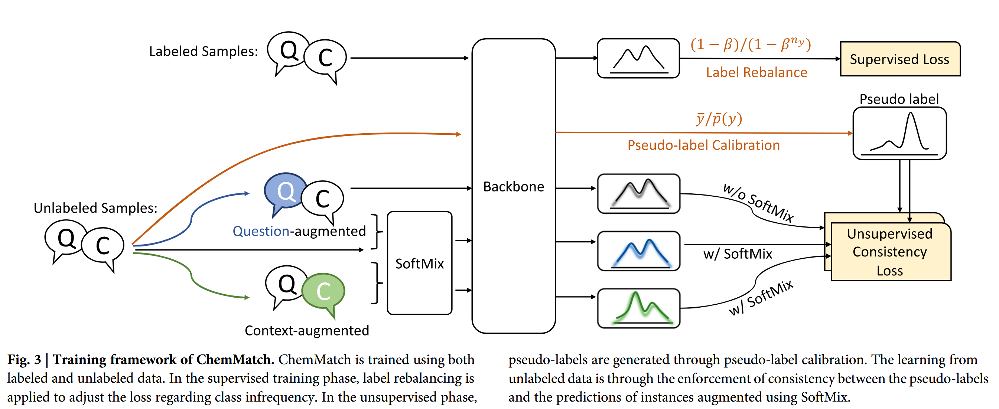
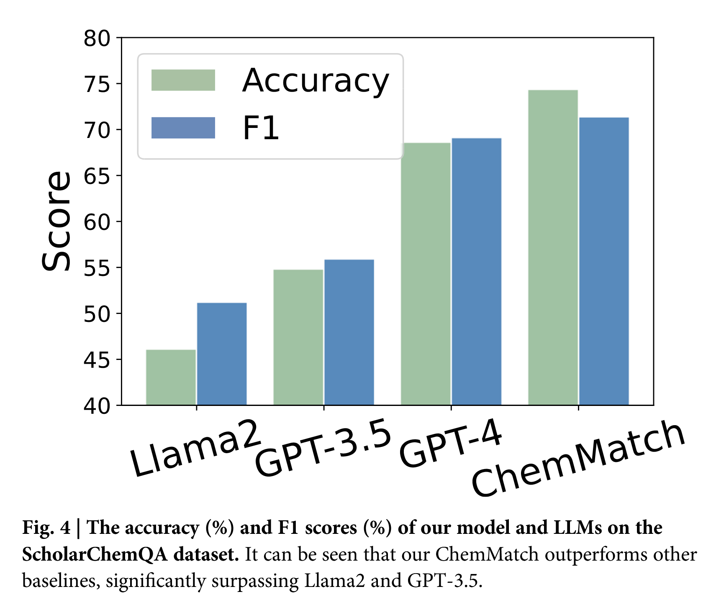
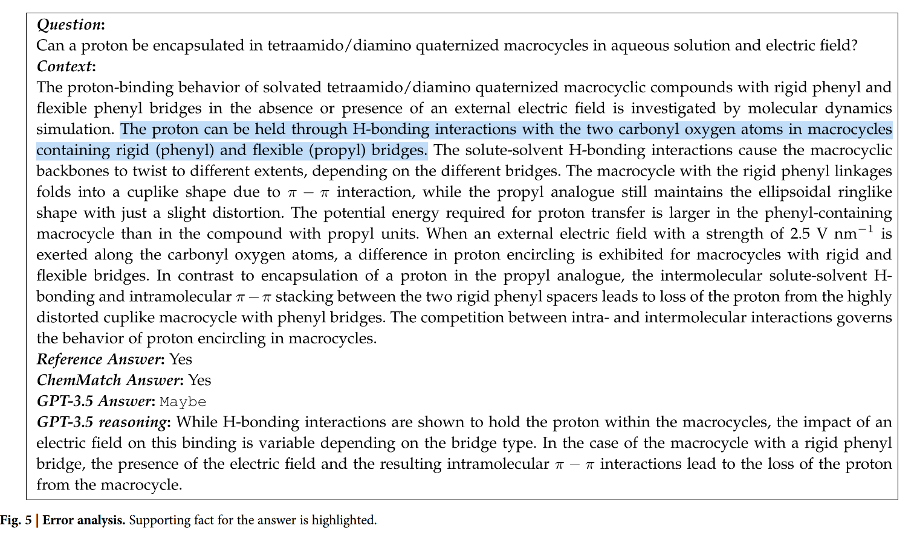

### AI能否攻克化学研究难题？
近年来，大语言模型（LLMs）在通用领域和生物医学领域的问答能力备受关注，但在化学研究场景中的表现却鲜少被系统评估。化学作为材料、能源、制药等领域的基石，其复杂的专业术语和推理逻辑对AI提出了更高挑战。一篇发表于《Communications Chemistry》的最新研究填补了这一空白——研究团队发布了首个基于化学学术论文的大规模问答数据集ScholarChemQA，并提出了高效模型ChemMatch，显著提升了化学问题的解答能力。
核心亮点速览
- 首创化学研究专用QA数据集：ScholarChemQA从超百万篇化学论文中精选构建，覆盖催化、理论化学等多元主题，问题均源于真实论文标题，答案由专家标注。
- 揭露LLMs短板：GPT-4在测试中准确率仅54%，凸显现有模型在专业化学推理上的不足。
- 高效模型ChemMatch：通过半监督学习与创新数据增强技术，以1/1000参数量超越GPT-3.5，为科研人员提供轻量级工具。
ScholarChemQA：真实化学问题的试金石
数据构建：从学术海洋中淘金
- 来源：整合Elsevier、Springer等学术平台超百万篇论文，筛选含疑问句标题的文献（如“Does X cause Y?”）。
- 标注：由化学博士团队依据论文摘要内容标注答案（Yes/No/Maybe），确保科学严谨性。
- 自动扩展：利用规则与GPT-4将陈述式标题转为疑问句，新增4k自动标注样本，丰富数据多样性。

数据特色
- 真实分布：Yes（65.8%）、No（21.2%）、Maybe（13.0%）比例反映科研结论的不确定性。
- 高难度挑战：71.5%问题需化学背景知识解答，涵盖化学反应机制、材料属性等专业推理（见图1）。

▲ 71.5%的问题需化学知识支撑，模型需结合文本理解与学科逻辑
ChemMatch模型：破解数据不平衡的利器
面对标注数据稀缺与类别失衡的双重挑战，ChemMatch创新性融合三大技术：
1. 标签再平衡（Label Rebalance）
- 问题：自动标注数据中“Maybe”类仅占13%，传统训练易偏向主流类别。
- 方案：动态调整损失函数权重，提升少数类影响力，使模型更关注长尾样本。
在人类注释数据集中，“Yes”类占65.8%，而代表性最低的类仅占13%。此外，如果将自动注释的数据集组合到训练中，不平衡问题会变得更加严重，因为自动数据集仅基于“Yes”和“No”类构建。因此，解决不太频繁的类的泛化问题至关重要。 该论文将标签再平衡原理整合到传统的交叉熵损失中。直观地说，增加了频率较低的类的损失权重。这种适应对少数类是有利的，推动他们有更大的余地，实现更高的准确性。
2. 伪标签校准（Pseudo-label Calibration）
- 创新点：利用未标注数据生成伪标签时，通过分布对齐技术修正预测偏差，确保伪标签质量接近人工标注。
伪标签通常由训练好的模型为未标记的数据生成。通过结合伪标记数据，该模型可以利用大量未标记的数据，增强其泛化能力并提高预测精度。为了确保伪标签的高质量，该论文校准它们的分布，使其与实际地面真值标签的分布相一致。
3. SoftMix增强：隐空间的智慧扰动
- 传统局限：文本替换、回译等表层增强多样性有限。
- 突破：在表示层混合问题与上下文的语义向量，生成多样化训练样本，提升模型鲁棒性（见图2）。
为了利用大量可用的未标记数据并增强学习过程，数据增强的概念在半监督学习中得到了广泛的应用。关键思想是创建数据变体，进行预测，并将其与伪标签进行比较，以指导模型训练。正如文中第3.1节中的半监督学习框架所介绍的那样，为了制定一致性损失，有必要增广未标记的案例。现有的增广方法大多在输入空间中。例如，图像增强包括旋转、裁剪和翻转，文本域增强包括回译和同义词替换。然而，研究表明，隐藏层中的插值可以捕获更高级的信息，增强语义多样性并提供额外的训练信号。例如，增强潜在空间的多样性可以提高文本生成模型的鲁棒性。受这些见解的启发，该介绍了SoftMix增强操作，旨在通过潜在空间增强来增加多样性和增强鲁棒性。

▲ChemMatch的训练框架 ChemMatch的训练同时利用了标注数据和未标注数据。在有监督训练阶段 ，通过标签再平衡（label rebalancing）技术调整损失函数，以应对类别不平衡问题。在无监督训练阶段 ，通过伪标签校准（pseudo-label calibration）生成伪标签，并通过增强样本的预测结果与伪标签之间的一致性来从未标注数据中学习。具体来说，使用SoftMix增强技术生成多样化的样本，并通过一致性约束来优化模型。
实验结果：小模型逆袭LLMs
性能对比

- ChemMatch以轻量级架构（参数量较小）显著超越GPT-3.5，验证了领域定制模型的价值。（如图4👆）
Our model achieves 72.1% accuracy, significantly outperforming GPT-3.5 (54.0%) and GPT-4 (58.2%).
- LLMs在化学推理中表现欠佳，常给出模糊的“Maybe”回答。（如图5👇）

▲ 模型虽识别关键证据，却错误推断结论，反映深层语义推理的不足
讨论与展望
- 局限性：当前数据集中于英文论文，未来需扩展多语言与跨模态（如分子结构）问答。
- 应用场景：
- 教育辅助：帮助学生理解复杂化学概念。
- 科研加速：为研究人员快速定位文献结论提供AI支持。
- 开源生态：团队公开数据集与代码（后台回复“ChemMatch”即可获取github链接以及相关论文链接），推动社区共建。
ScholarChemQA与ChemMatch的诞生，不仅为评估AI的化学认知能力树立了标杆，更证明了领域专用模型在解决科学问题上的巨大潜力。未来，随着更多学科知识的注入，AI或将成为科研工作者探索未知的“智能显微镜”。
“化学研究的每一个问号，都是AI进化的惊叹号。”